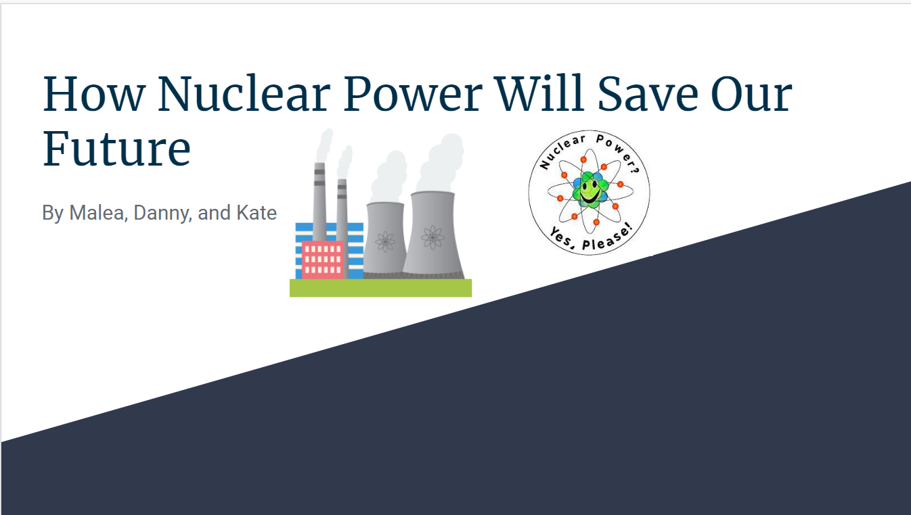

My first project is a house that I build with a group of students in Mexico. It wasn't for a class, but is was through the church and most of the students from Pidemont High went. We started by mixing and laying down a conrete slab, and then we built the walls and put them up. I not only learned a lot about building houses, but it was super meaningful to help the families get shelter when they needed it.

The second project I chose to talk about is my nuclear power presentation I made for my chemistry class. My presentation was arguing that nuclear power is a good souce of energy compared to fossil fuels, and we should start using it more. My project was mostly researching and writing, but I also had to present to the class. This project taught me how bad fossil fuels really are and how we need to change our energy sources soon or else there will be very bad damage to the Earth and the people living on it.